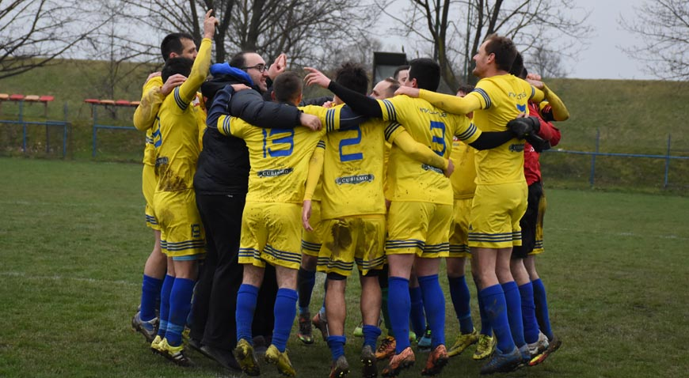
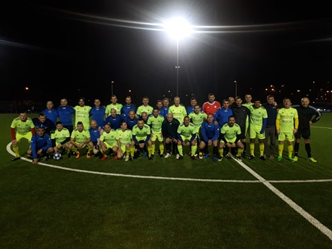
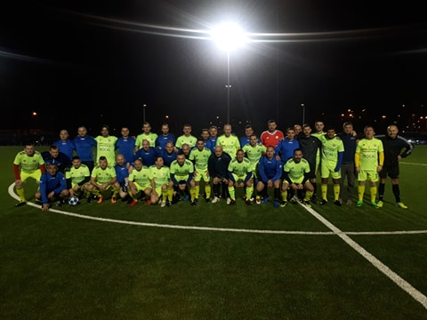

Vijesti



Kreće prvenstvo !!
LONJA GOSTUJE U OSTRNI U nedjelju 08.03.2020 s početkom u 15h Lonja će igrati u Ostrni protiv istoimenog domaćina. Nastavak Više ...

Veterani Lonje gosti Dinama
Danas smo gostovali na Maksimiru sa selekcijom veterana. Više ...
Prijave u punom jeku...Veliki odaziv zagrebačkih ekipa....
41. po redu memorijalni malonogometni turnir Čedomil Drvenkar u Vrbovcu ove godine mogao bi biti jedan od najkvalitetnijih unazad nekoliko godina.More ...